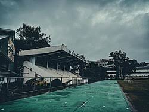
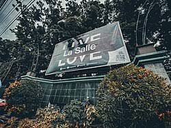
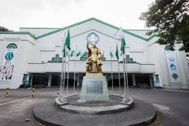

At the main campus of the University of St. La Salle (USLS) in Bacolod, the Brother Rolly R. Dizon FSC Sports Complex serves as the central hub for track and field athletics, football, and outdoor physical education courses.
The University of St. La Salle (USLS) campus features multiple strategic entry points to manage pedestrian and vehicle flow across its 10-hectare property. Depending on who you are and how you are arriving, specific gates serve different functions:
The bronze statue of Saint John Baptist de La Salle, created by renowned artist Ronald Castrillo, features a highly detailed, life-sized depiction of the founder alongside two young children. The monument captures the core essence of the La Sallian mission through its distinct visual elements
The bronze statue of Saint John Baptist de La Salle, created by renowned artist Ronald Castrillo, features a highly detailed, life-sized depiction of the founder alongside two young children. The monument captures the core essence of the La Sallian mission through its distinct visual elements